横田保育園 送り・お迎え手順
電話番号：0948-22-1329
住所：〒820-0044 福岡県飯塚市横田351-1
Google Mapで開く
入口と出口が分かれています。
出口：西側（GEO側） ／ 入口：東側（王将側）
送り（8:30以降）
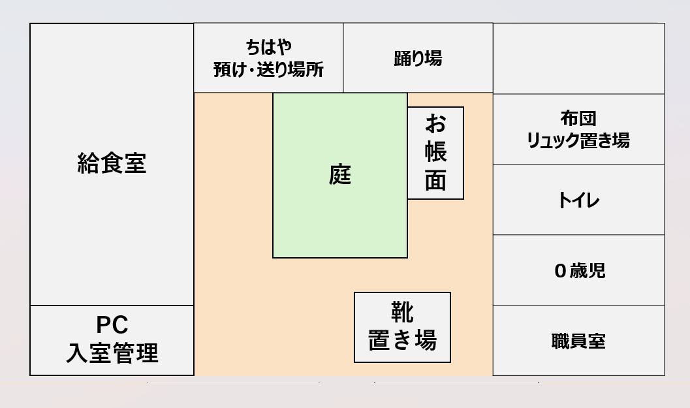
送り時の間取り図
① PC打刻（PC入室管理）
入口左のパソコンで、2歳児 → 川島知隼 → 入室
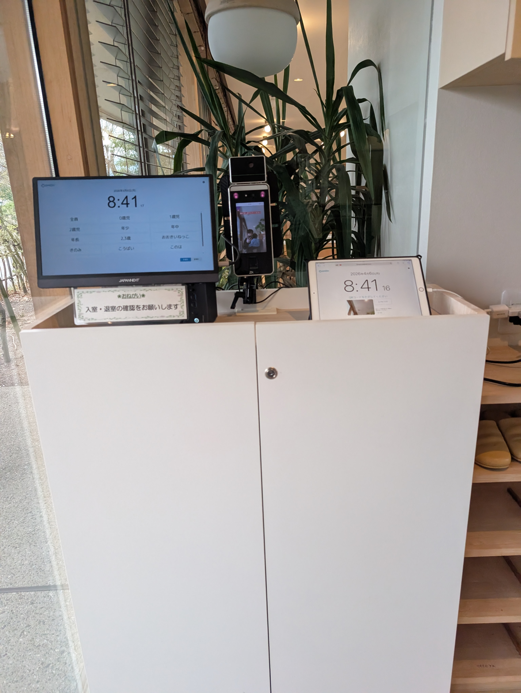
PC打刻の様子
② 靴を置く（靴置き場）
知隼の靴（名前が書いてあります）を靴箱に置いてください。
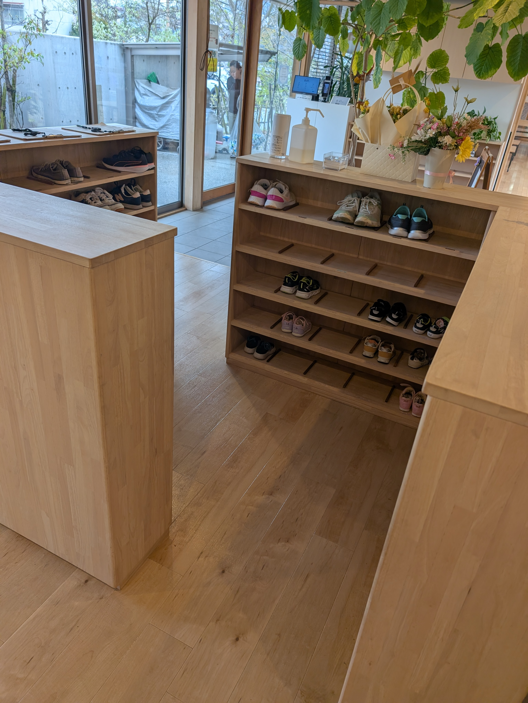
靴箱
③ 荷物を置く（ちはや預け・送り場所）
ちはや預け・送り場所に、以下を置いてください。
おむつ（もうおむつが外れたので、入れなくて大丈夫です）- お手拭きタオル
- 帽子
- お帳面
- 水筒（新しく水色のディズニーのものに変更になりました。写真はありません。申し訳ございません。）
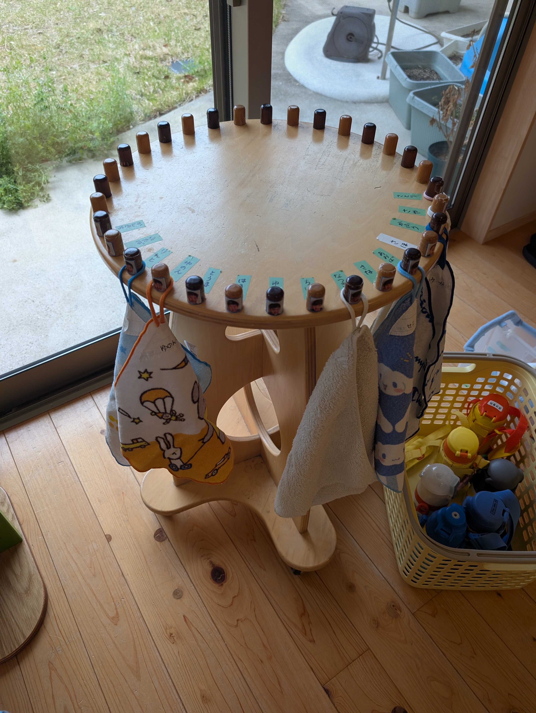
お手拭きタオルをかける場所
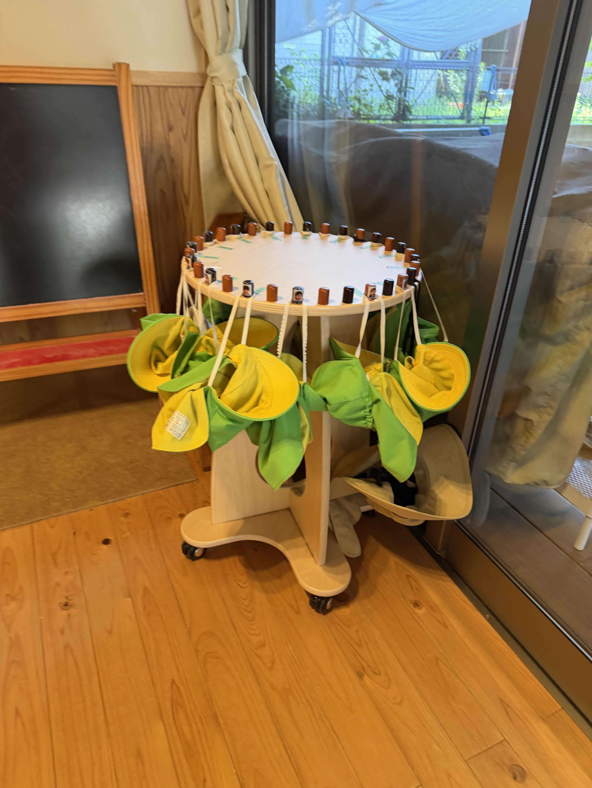
帽子掛け
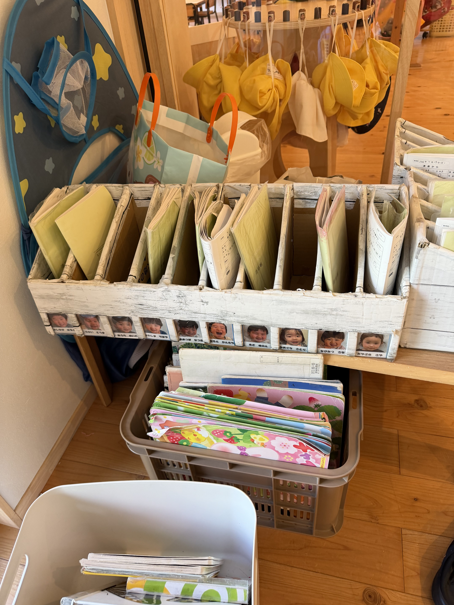
お帳面の置き場所
④ 荷物を置く（布団・リュック置き場）
リュック（バッグ）を布団・リュック置き場に置いてください。プールバッグ（ポケモン柄、名前入り）も一緒に置いてください。

荷物置き場
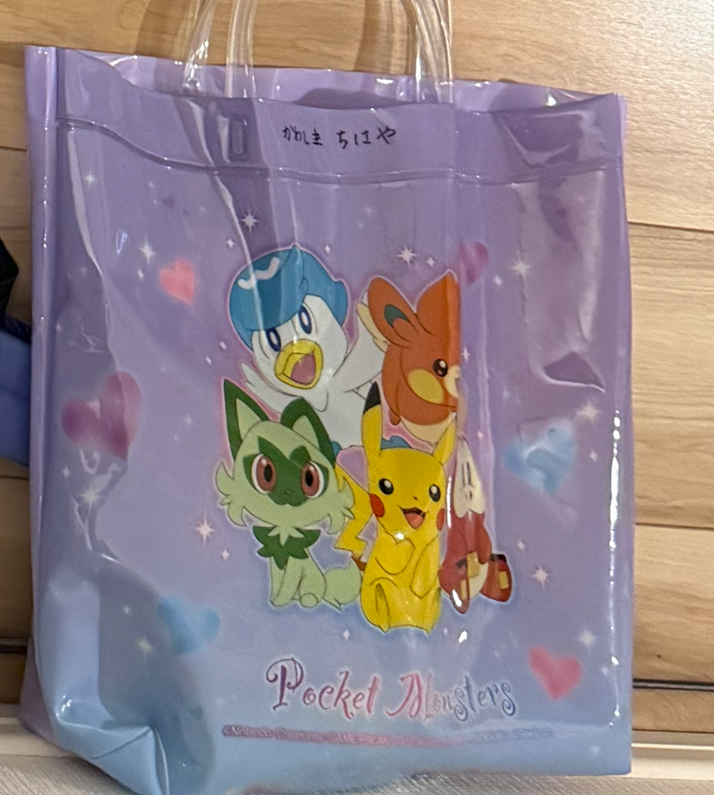
ちはやのプールバッグ（ポケモン柄）
⑤ ちはやを2歳児クラスへ送る（ちはや預け・送り場所）
2歳児クラスの保育士さんに、知隼を預けてください。
⑥ 布団の片付け
布団バッグ（茶色）を持ち帰ったら、タンスにしまってください。
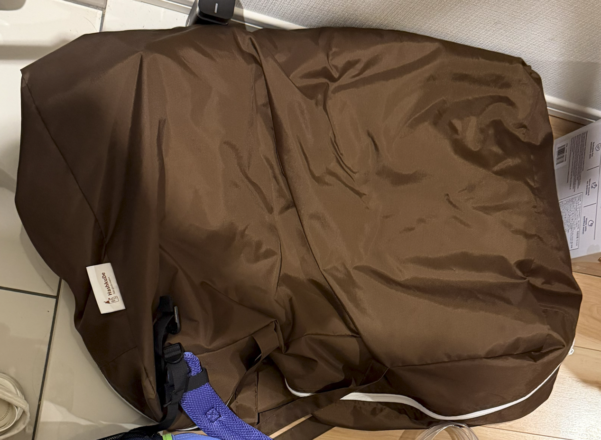
布団バッグ（茶色）
- 左側：布団と夏用の掛け布団（夏用の掛け布団は布団の中に入れてOK）
- 右側：茶色の布団バッグ自体
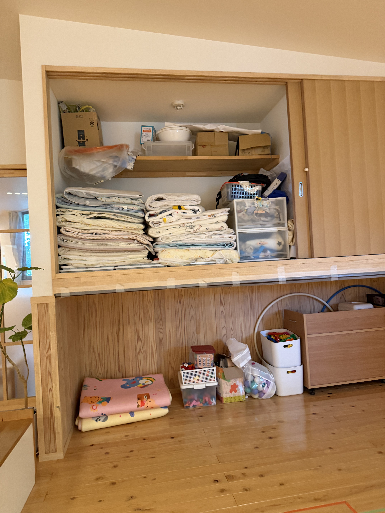
布団をしまうタンス
荷物を置く場所は、おむつなども含めて、顔写真か名前が書いてある場所を確認してください。
お迎え手順
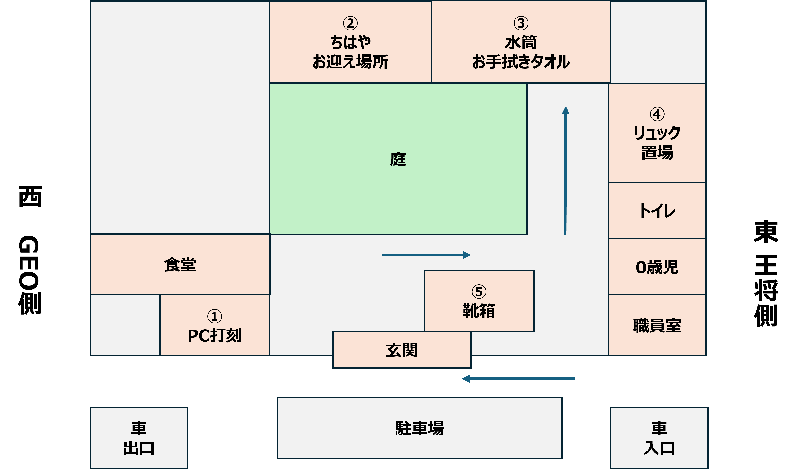
横田保育園 間取り図
① 入口でPC打刻（図の①）
入口の左側にあるパソコンで、退勤打刻をしてください。
2歳児 → 川島知隼 → 退室
② 知隼をピックアップ（図の②）
ファミサポが来ることを連絡帳に書いているので、「ファミサポです、ちはやくんを迎えに来ました」と言えば大丈夫です。
③ 知隼がいる場所のお手拭きタオルと水筒を取る
- お手拭きタオル（知隼がいる場所に掛かっています）※毎回変わるため画像なし
- 水筒（水色のサーモス）
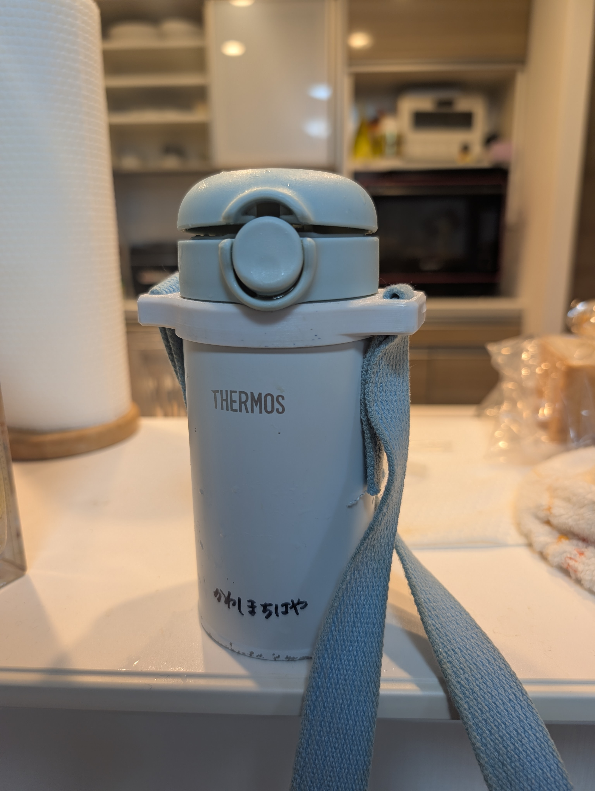
知隼の水筒（水色のサーモス）
④ リュックを取る（図の④）
通路側にある知隼のリュックを忘れずに取ってください。
荷物の場所は、顔写真か名前が書いてある場所を見て確認してください。
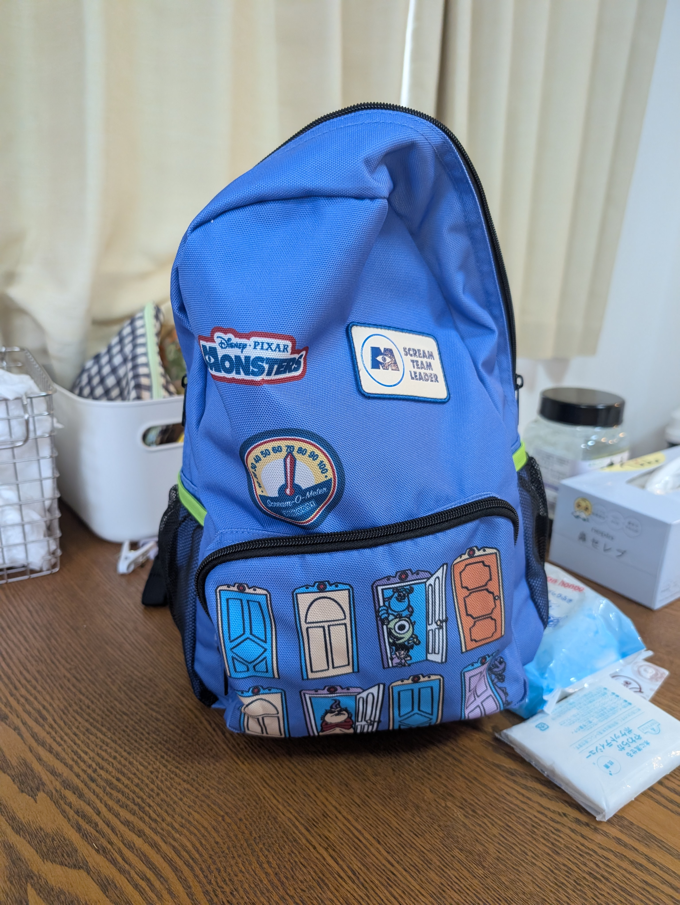
知隼のリュック（モンスターズインク）
⑤ 知隼の靴を取る（図の⑤）
帰る前に、知隼の靴（名前が書いてあります）を忘れずに取ってください。※毎回変わるため画像なし
⚠️ 出口はGEO側です。入口（王将側）と間違えないようにご注意ください。
わからないとき
入口右側の事務室スタッフに声をかけてください。
迎え後の流れ
迎えに行ったら、一旦家に帰ってください。
住所：福岡県飯塚市立岩964-24 アルファスマート新飯塚駅東口801号室
Google Mapで開く
路肩、または駐車場21番に停めてください。
路肩の写真
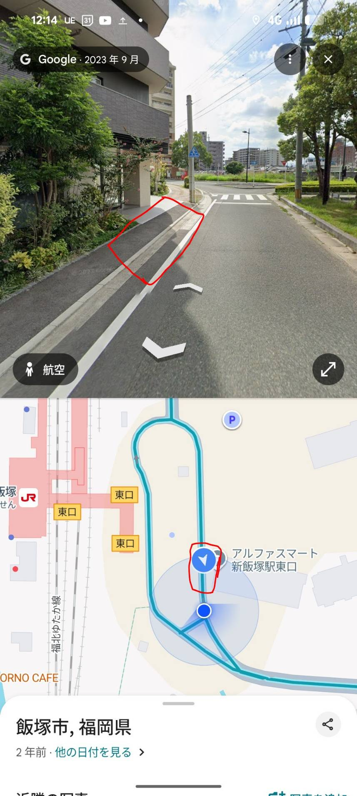
早織さんを待つまで、YouTubeは見せないでください。